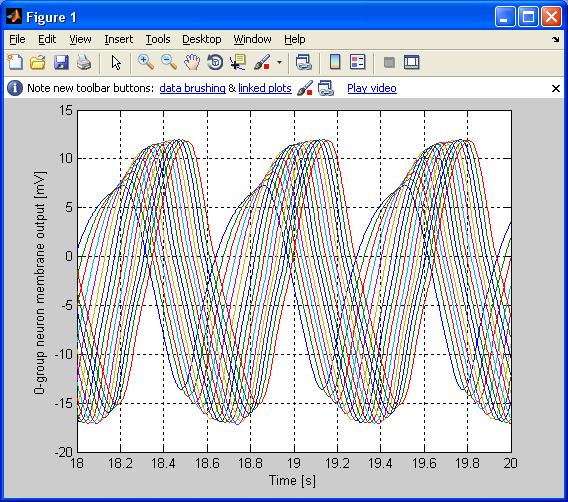
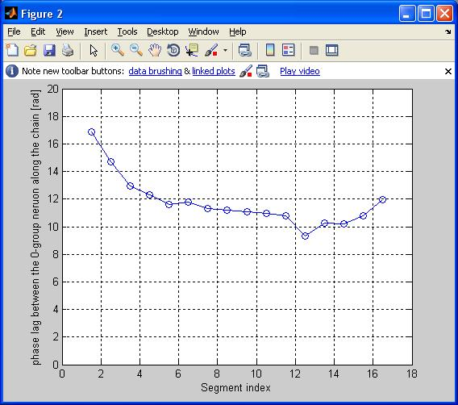

This is the readme for the model associated with the paper: Zheng M, Friesen WO, Iwasaki T (2007) Systems-level modeling of neuronal circuits for leech swimming. J Comput Neurosci 22:21-38 Abstract: This paper describes a mathematical model of the neuronal central pattern generator (CPG) that controls the rhythmic body motion of the swimming leech. The systems approach is employed to capture the neuronal dynamics essential for generating coordinated oscillations of cellmembrane potentials by a simple CPG architecture with a minimal number of parameters. Based on input/output data from physiological experiments, dynamical components (neurons and synaptic interactions) are first modeled individually and then integrated into a chain of nonlinear oscillators to form a CPG.We showthrough numerical simulations that the values of a few parameters can be estimated within physiologically reasonable ranges to achieve good fit of the data with respect to the phase, amplitude, and period. This parameter estimation leads to predictions regarding the synaptic coupling strength and intrinsic period gradient along the nerve cord, the latter of which agrees qualitatively with experimental observations. ------ This archive contains matlab files that simulate the model for leech swimming CPG that we developed and reported in the above paper. The main file is "mainrun.m" and all the other files are called in it. By default, it simulates the CPG model and plots the membrane potentials (Fig 3b)  and their phase relations (for example Fig. 6):  These files were supplied by Ted Iwasaki, University of Virginia